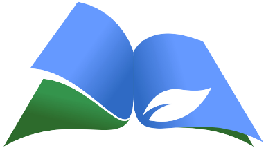

🔙
📈 Grafik Tahunan
📊 Pivot Tahunan
📈 Grafik Bulanan
📊 Pivot Bulanan
📊 Pivot Bulan
📉 Grafik Bulan
🗑 Hapus Bulan
Jenjang
Keterangan
Kategori
Nama
Buku
Data Daftar Pengunjung Perpustakaan Lubangsa
Daftar Pengunjung
No
Tanggal
Nama
Blok
Jenjang
Judul Buku
Kategori
Keterangan
Rekap Jenjang Pendidikan
Rekap Keterangan
Rekap Kategori
Rekap Nama Pengunjung
Rekap Judul Buku
×
Diagram & Grafik

Memproses